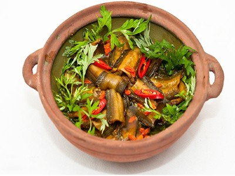

|  |
Food's name: Eel cooked with ginseng▸ Ingredients:
▸ Time to prepare: 45 minutes ▸ Approx quantity: 1 small bowl |
▸ Detailed recipe:
- Eel cleaned, gutted, cut into bite-sized pieces.
- Ginseng washed, jujube seed removed, tangerine peel chopped and boiled with water.
- Put all the above ingredients in a pot with enough water.
- Simmer for about 1 hour
- Season to taste and then turn off the heat.
▸ Calories and related information: